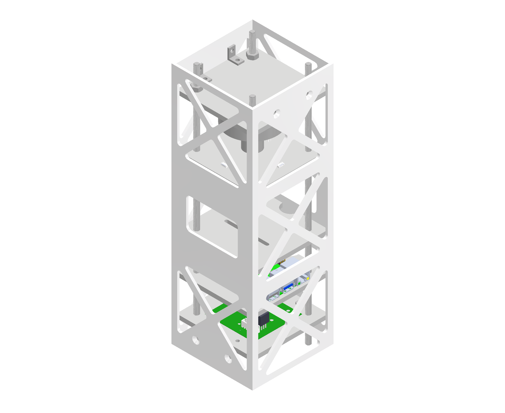

Tracking the Target
Integrating camera measurements with the pointing system using OpenCV and AprilTag
Using OpenCV and an AprilTag library, I developed the processing pipeline and connected its measurements to the control system. A fiducial marker of known size let the camera estimate the target’s relative position and orientation, which we used to turn the demonstrator towards it.
I chose a Raspberry Pi 4 and Camera Module 3 for their capability and compatibility. Before the hardware was ready, I developed the Python software with a printed AprilTag and my laptop webcam.
The detector located the marker’s four corners; with its dimensions and the camera calibration, pose estimation gave distance and angle. I drew a 3D outline over the image to see how the estimate followed the target, and added live plots that became the ground station interface. In the hardware version, the Pi streamed images to the ground computer and the angular error was sent back to the controller to drive it towards zero.